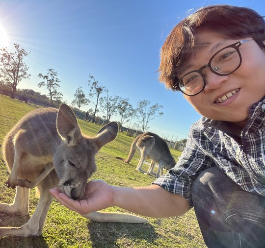

Daewon Chae
Ph.D. Student, Electrical and Computer Engineering
University of Michigan
Hello! I am a second-year Ph.D. student at the University of Michigan, advised by Prof. Hun-Seok Kim. My current research interest lies in improving the efficiency of generative foundation models.
Previously, I received my M.S. in Computer Science from Korea University under Prof. Jinkyu Kim. I also spent time as a visiting student at the University of Wisconsin–Madison, working with Prof. Kangwook Lee.

News
- Our paper got accepted to NeurIPS 2026
- Our paper got accepted to TMLR 2025 (J2C Certification)
- Started my Ph.D. journey at the University of Michigan
- Our paper got accepted to ICML 2025 (Oral)
- Our paper got accepted to AAAI 2025 (Oral)
Publications
* equal contribution · † co-corresponding author
-
DyRA: Dynamic Residual Approximation for Efficient Matrix Multiplication in DNNs
Neural Information Processing Systems (NeurIPS), 2026
-
Streaming Dense Voxel Representations for 3D Occupancy Prediction
European Conference on Computer Vision (ECCV), 2026
-
AxisGuide: Grounding Robot Action Coordinate System in RGB Observations for Robust Visuomotor Manipulation
Robotics: Science and Systems (RSS), 2026
-
Scene Graph-Guided Proactive Replanning for Failure-Resilient Embodied Agent
Autonomous Agents and Multiagent Systems (AAMAS), 2026
RSS Workshop on Semantic Reasoning and Goal Understanding in Robotics (RSSW), 2025
-
ENTP: Encoder-only Next Token Prediction
Transactions on Machine Learning Research (TMLR), 2025 J2C Certification
NeurIPS Workshop on What Can('t) Transformers Do? (NeurIPSW), 2025 Spotlight
-
Hard-Negative Prototype-Based Regularization for Few-Shot Class-Incremental Learning
Transactions on Machine Learning Research (TMLR), 2025
-
SemanticControl: A Training-Free Approach for Handling Loosely Aligned Visual Conditions in ControlNet
British Machine Vision Conference (BMVC), 2025
-
VersaPRM: Multi-Domain Process Reward Model via Synthetic Reasoning Data
International Conference on Machine Learning (ICML), 2025 Oral
-
DiffExp: Efficient Exploration in Reward Fine-tuning for Text-to-Image Diffusion Models
AAAI Conference on Artificial Intelligence (AAAI), 2025 Oral
-
InstructBooth: Instruction-following Personalized Text-to-Image Generation
ICML Workshop on Foundation Models in the Wild (ICMLW), 2024
-
Clustering-based Image-Text Graph Matching for Domain Generalization
International Conference on Pattern Recognition (ICPR), 2024
-
Text-driven Prototype Learning for Few-Shot Class-Incremental Learning
International Conference on Pattern Recognition (ICPR), 2024
-
Re-ID Technology for V2I based Cooperative Driving Protocol
International Conference on Ubiquitous and Future Networks (ICUFN), 2023